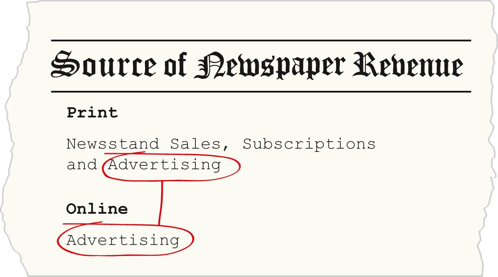

The proliferation of online communication has had a profound effect on the newspaper industry. As individuals turn to the Internet to receive news for free, traditional newspapers struggle to remain competitive and hold onto their traditional readers. However, the Internet’s appeal goes beyond free content. This section delves further into the Internet and its influence on the print industry. The Internet and its role in media are explored in greater detail in Chapter 11 "The Internet and Social Media" of this textbook.
Web logs, or blogsShort for weblog, a blog features news and commentary from one or many authors., have offered a new take on the traditional world of journalism. Blogs feature news and commentary entries from one or more authors. However, journalists differ on whether the act of writing a blog, commonly known as blogging, is, in fact, a form of journalism.
Indeed, many old-school reporters do not believe blogging ranks as formal journalism. Unlike journalists, bloggers are not required to support their work with credible sources. This means that stories published on blogs are often neither verified nor verifiable. As Jay Rosen, New York University journalism professor, writes, “Bloggers are speakers and writers of their own invention, at large in the public square. They’re participating in the great game of influence called public opinion.”Jay Rosen, “Brain Food for BloggerCon,” PressThink (blog), April 16, 2004, http://journalism.nyu.edu/pubzone/weblogs/pressthink/2004/04/16/con_prelude.html. Despite the blurry lines of what constitutes “true” journalism—and despite the fact that bloggers are not held to the same standards as journalists—many people still seek out blogs to learn about news. Thus, blogs have affected the news journalism industry. According to longtime print journalist and blogger Gina Chen, “blogging has changed journalism, but it is not journalism.”Gina Chen, “Is Blogging Journalism?” Save the Media, March 28, 2009, http://savethemedia.com/2009/03/28/is-blogging-journalism/.
Beyond the lack of accountability in blogging, blogs are free from the constraints of journalism in other ways that make them increasingly competitive with traditional print publications. Significantly, Internet publication allows writers to break news as soon as it occurs. Unlike a paper that publishes only once a day, the Internet is constantly accessible, and information is ready at the click of a mouse.
In 1998, the Internet flexed its rising journalistic muscle by breaking a story before any major print publication: the Bill Clinton/Monica Lewinsky scandal. The Drudge Report, an online news website that primarily consists of links to stories, first made the story public, claiming to have learned of the scandal only after Newsweek magazine failed to publish it. On January 18, 1998, the story broke online with the title “Newsweek Kills Story on White House Intern. Blockbuster Report: 23-year-old, Former White House Intern, Sex Relationship with President.” The report gave some details on the scandal, concluding the article with the phrase “The White House was busy checking the Drudge Report for details.”“Original Drudge Reports of Monica Lewinsky Scandal (January 17, 1998),” AustralianPolitics.com, http://australianpolitics.com/usa/clinton/impeachment/drudge.shtml. This act revealed the power of the Internet because of its superiority in timeliness, threatening the relevancy of slower newspapers and news magazines.
Print media also continuously struggle with space constraints, another limit that the Internet is spared. As newspapers contemplate making the transition from print to online editions, several editors see the positive effect of this particular issue. N. Ram, editor-in-chief of The Hindu, claims, “One clear benefit online editions can provide is the scope this gives for accommodating more and longer articles…. There need be no space constraints, as in the print edition.”S. Viswanathan, “Internet Media: Sky’s the Limit,” Hindu, March 28, 2010, http://beta.thehindu.com/opinion/Readers-Editor/article318231.ece. With the endless writing space of the Internet, online writers have the freedom to explore topics more fully, to provide more detail, and to print interviews or other texts in their entirety—opportunities that many print journalists have longed for since newspapers first began publishing.
Online writing also provides a forum for amateurs to enter the professional realm of writing. With cost-cutting forcing newspapers to lay off writers, more and more would-be journalists are turning to the Internet to find ways to enter the field. Interestingly, the blogosphere has launched the careers of journalists who otherwise may never have pursued a career in journalism. For example, blogger Molly Wizenberg founded the blog Orangette because she didn’t know what to do with herself: “The only thing I knew was that, whatever I did, it had to involve food and writing.”Nick Wyke, “Meet the Food Bloggers: Orangette,” Times (London), May 26, 2009, http://www.timesonline.co.uk/tol/life_and_style/food_and_drink/real_food/article6364590.ece. After Orangette became a successful food blog, Wizenberg transitioned into writing for a traditional media outlet: food magazine Bon Appetit.
With declining readership and increasing competition from blogs, most newspapers have embraced the culture shift and have moved to online journalism. For many papers, this has meant creating an online version of their printed paper that readers will have access to from any location, at all times of the day. By 2010, over 10,000 newspapers had gone online. But some smaller papers—particularly those in two-paper communities—have not only started websites but have also ceased publication of their printed papers entirely.
One such example is Seattle’s Post-Intelligencer. In 2009, the newspaper stopped printing, “leaving the rival Seattle Times as the only big daily in town.”David Folkenflik, “Newspapers Wade Into an Online-Only Future,” NPR, March 20, 2009, http://www.npr.org/templates/story/story.php?storyId=102162128. As Steve Swartz, president of Hearst Newspapers and owner of the Post-Intelligencer, commented about the move to online-only printing, “Being the second newspaper in Seattle didn’t work. We are very enthusiastic, however, about this experiment to create a digital-only business in Seattle with a robust community website at its core.”David Folkenflik, “Newspapers Wade Into an Online-Only Future,” NPR, March 20, 2009, http://www.npr.org/templates/story/story.php?storyId=102162128. For the Post-Intelligencer, the move meant a dramatic decrease in its number of staff journalists. The printed version of the paper employed 135 journalists, but the online version, Seattlepi.com, employs only 2 dozen. For Seattlepi.com, this shift has been doubly unusual because the online-only newspaperA newspaper that does not publish a print version. is not really like a traditional newspaper at all. As Swartz articulated, “Very few people come to our website and try to re-create the experience of reading a newspaper—in other words, spending a half-hour to 45 minutes and really reading most of the articles. We don’t find people do that on the Web.”David Folkenflik, “Newspapers Wade Into an Online-Only Future,” NPR, March 20, 2009, http://www.npr.org/templates/story/story.php?storyId=102162128. The online newspaper is, in reality, still trying to figure out what it is. Indeed, this is an uncomfortable position familiar to many online-only papers: trapped between the printed news world and the online world of blogs and unofficial websites.
During this transitional time for newspapers, many professional journalists are taking the opportunity to enter the blogosphere, the realm of bloggers on the Internet. Journalist bloggers, also known as beatbloggersProfessional journalist who writes a blog to gain better access to readers and their ideas., have begun to utilize blogs as “tool[s] to engage their readers, interact with them, use them as sources, crowdsource their ideas and invite them to contribute to the reporting process,” says beatblogger Alana Taylor.Alana Taylor, “What It Takes to Be a Beatblogger,” BeatBlogging.org (blog), March 5, 2009, http://beatblogging.org/2009/03/05/what-it-takes-to-be-a-beatblogger/. As beatblogging grows, online newspapers are harnessing the popularity of this new phenomenon and taking advantage of the resources provided by the vast Internet audience through crowdsourcing (outsourcing problem solving to a large group of people, usually volunteers). Blogs are becoming an increasingly prominent feature on news websites, and nearly every major newspaper website displays a link to the paper’s official blogs on its homepage. This subtle addition to the web pages reflects the print industry’s desire to remain relevant in an increasingly online world.
Even as print newspapers are making the transformation to the digital world with greater or less success, Internet news sites that were never print papers have begun to make waves. Sites such as The Huffington Post, The Daily Beast, and the Drudge Report are growing in popularity. For example, The Huffington Post displays the phrase “The Internet Newspaper: News, Blogs, Video, Community” as its masthead, reiterating its role and focus in today’s media-savvy world.Huffington Post, http://www.huffingtonpost.com/. In 2008, former Vanity Fair editor Tina Brown cofounded and began serving as editor-in-chief of The Daily Beast. On The Daily Beast’s website, Brown has noted its success: “I revel in the immediacy, the responsiveness, the real-time-ness. I used to be the impatient type. Now I’m the serene type. Because how can you be impatient when everything happens right now, instantly?”Tina Brown, “The Daily Beast Turns One,” Daily Beast, October 5, 2009, http://www.thedailybeast.com/blogs-and-stories/2009-10-05/the-daily-beast-turns-one/full/.
Some newspapers are also making even more dramatic transformations to keep up with the changing online world. In 2006, large newspaper conglomerate GateHouse Media began publishing under a Creative Commons license, giving noncommercial users access to content according to the license’s specifications. The company made the change to draw in additional online viewers and, eventually, revenue for the newspapers. Writer at the Center for Citizen Media, Lisa Williams, explains in her article published by PressThink.org:
GateHouse’s decision to CC license its content may be a response to the cut-and-paste world of weblogs, which frequently quote and point to newspaper stories. Making it easier—and legal—for bloggers to quote stories at length means that bloggers are pointing their audience at that newspaper. Getting a boost in traffic from weblogs may have an impact on online advertising revenue, and links from weblogs also have an impact on how high a site’s pages appear in search results from search engines such as Google. Higher traffic, and higher search engine rankings build a site’s ability to make money on online ads.Lisa Williams, “Newspaper Chain Goes Creative Commons: GateHouse Media Rolls CC Over 96 Newspaper Sites,” PressThink (blog), December 15, 2006, http://journalism.nyu.edu/pubzone/weblogs/pressthink/2006/12/15/newspaper_chain.html.
GateHouse Media’s decision to alter its newspapers’ licensing agreement to boost advertising online reflects the biggest challenge facing the modern online newspaper industry: profit. Despite shrinking print-newspaper readership and rising online readership, print revenue remains much greater than digital revenue because the online industry is still determining how to make online newspapers profitable. One article notes the following:
The positive news is that good newspapers like The New York Times, The Guardian, The Financial Times, and The Wall Street Journal now provide better, richer, and more diverse content in their Internet editions…. The bad news is that the print media are yet to find a viable, let alone profitable, revenue model for their Internet journalism.S. Viswanathan, “Internet Media: Sky’s the Limit,” Hindu, March 28, 2010, http://beta.thehindu.com/opinion/Readers-Editor/article318231.ece.
The issue is not only that information on the Internet is free but also that advertising is far less expensive online. As National Public Radio (NPR) reports, “The online-only plan for newspapers remains an unproven financial model; there are great savings by scrapping printing and delivery costs, but even greater lost revenues, since advertisers pay far more money for print ads than online ads.”David Folkenflik, “Newspapers Wade Into an Online-Only Future,” NPR, March 20, 2009, http://www.npr.org/templates/story/story.php?storyId=102162128.
Figure 4.11
Sources of Newspaper Revenue
Despite these challenges, newspapers both in print and online continue to seek new ways to provide the public with accurate, timely information. Newspapers have long been adapting to cultural paradigm shifts, and in the face of losing print newspapers altogether, the newspaper industry continues to reinvent itself to keep up with the digital world.
Please respond to the following writing prompts. Each response should be a minimum of one paragraph.
Review Questions
Questions for Section 4.1 "History of Newspapers"
Questions for Section 4.2 "Different Styles and Models of Journalism"
Questions for Section 4.3 "How Newspapers Control the Public’s Access to Information and Impact American Pop Culture"
Questions for Section 4.4 "Current Popular Trends in the Newspaper Industry"
Questions for Section 4.5 "Online Journalism Redefines News"
Although modern print newspapers increasingly face economic challenges and have reduced the number of journalists they have on staff, career opportunities still exist in newspaper journalism. Those desiring to enter the field may need to explore new ways of approaching journalism in a transforming industry.
Read the articles “Every Newspaper Journalist Should Start a Blog,” written by Scott Karp, found at http://publishing2.com/2007/05/22/every-newspaper-journalist-should-start-a-blog/, and “Writing the Freelance Newspaper Article,” by Cliff Hightower, at http://www.fmwriters.com/Visionback/Issue32/Writefreenewspaper.htm.
Think about these two articles as you answer the following questions.